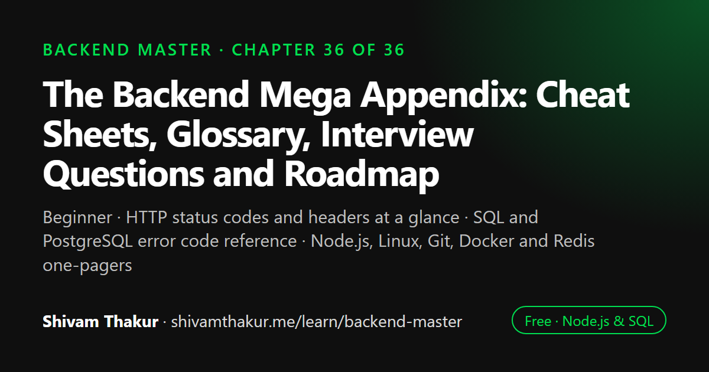

Chapter 36 of 36 · Beginner
The Backend Mega Appendix: Cheat Sheets, Glossary, Interview Questions and Roadmap
The Mega Appendix — The Reference Shelf

This appendix collects the quick-reference material from the whole course: HTTP status codes and headers, REST conventions, SQL and PostgreSQL error codes, Node.js, Linux, Git, Docker, Redis and MongoDB one-pagers, a security checklist, decision tables, a glossary, an interview question bank, a roadmap and an honest ledger of what was tested.
In this chapter you will learn
- HTTP status codes and headers at a glance
- SQL and PostgreSQL error code reference
- Node.js, Linux, Git, Docker and Redis one-pagers
- A glossary and interview question bank
- What in the course was tested versus not run
How to Use This Chapter
This is the part of the book you keep open in another tab. It is reference, not tutorial: dense tables and cheat sheets that point back to the chapter where each idea was taught. Use the table of contents below to jump; use the Evidence Ledger (Appendix R) to see exactly which parts of the book were run and which were not.
| Appendix | Contents |
|---|---|
| A | HTTP status codes |
| B | HTTP headers you actually use |
| C | REST and API design conventions |
| D | SQL and PostgreSQL cheat sheet |
| E | PostgreSQL error codes (SQLSTATE) |
| F | Node.js one-pager |
| G | Linux and terminal one-pager |
| H | Git one-pager |
| I | Docker and Kubernetes one-pager |
| J | Redis and MongoDB command cheat sheets |
| K | Regular expressions (and ReDoS) |
| L | Security checklist (OWASP-aligned) |
| M | Numbers every backend engineer should know |
| N | Decision tables (which tool when) |
| O | Glossary (A–Z) |
| P | Interview question bank (by topic) |
| Q | Learning roadmap and reading list |
| R | Evidence ledger: what was tested vs not |
Appendix A: HTTP Status Codes (Chapter 3, 8)
| Code | Name | Use it for |
|---|---|---|
| 200 | OK | Successful GET/PUT/PATCH with a body |
| 201 | Created | Resource created (POST), with Location header |
| 202 | Accepted | Work queued for async processing (Chapter 28) |
| 204 | No Content | Success with no body (DELETE, some PUT) |
| 301 | Moved Permanently | Permanent redirect (cached by browsers) |
| 302/303/307/308 | Found / See Other / Temp & Perm redirect (method-preserving) | Temporary / permanent redirects |
| 304 | Not Modified | Conditional GET matched ETag (Chapter 27: 0-byte body) |
| 400 | Bad Request | Malformed/invalid input (validation) |
| 401 | Unauthorized | Not authenticated (missing/invalid credentials) |
| 403 | Forbidden | Authenticated but not allowed (Chapter 22) |
| 404 | Not Found | No such resource (also used to hide existence: Chapter 22) |
| 405 | Method Not Allowed | Wrong verb; send Allow |
| 406 / 415 | Not Acceptable / Unsupported Media Type | Content negotiation failures |
| 408 | Request Timeout | Client too slow |
| 409 | Conflict | State conflict (duplicate, out of stock, version mismatch) |
| 410 | Gone | Permanently removed |
| 412 | Precondition Failed | If-Match mismatch (optimistic locking, Chapter 16) |
| 413 | Content Too Large | Body over limit (we saw entity.too.large) |
| 422 | Unprocessable Content | Semantically invalid (business-rule validation) |
| 423 | Locked | Resource locked |
| 428 | Precondition Required | Require If-Match |
| 429 | Too Many Requests | Rate limited; send Retry-After |
| 500 | Internal Server Error | Unexpected bug (generic body; Chapter 25) |
| 501 | Not Implemented | Feature unsupported |
| 502 | Bad Gateway | Upstream returned invalid response/refused connection (we saw this from nginx, Chapter 29) |
| 503 | Service Unavailable | Overloaded/maintenance/not ready; send Retry-After |
| 504 | Gateway Timeout | Upstream timed out |
Rules: 401 = "who are you?", 403 = "I know you; no." 404 can mean "hidden." Use 409 for state conflicts, 422 (or 400) for validation, 429 with Retry-After. Errors: RFC 9457 application/problem+json (Chapter 8).
Appendix B: HTTP Headers (Chapters 3, 23, 27)
| Header | Direction | Purpose |
|---|---|---|
Host |
Req | Target host (virtual hosting) |
Authorization: Bearer … |
Req | Credentials |
Content-Type / Accept |
Both | Body type / acceptable types |
Content-Length / Transfer-Encoding: chunked |
Both | Body framing |
Cookie / Set-Cookie |
Req / Res | Cookies (HttpOnly; Secure; SameSite=Lax; Max-Age; Path) |
Cache-Control |
Both | public/private, max-age, s-maxage, no-store, no-cache, immutable, stale-while-revalidate |
ETag / If-None-Match |
Res / Req | Validators → 304 |
Last-Modified / If-Modified-Since |
Res / Req | Time-based validators |
If-Match |
Req | Optimistic concurrency → 412 |
Vary |
Res | Which request headers affect the response (cache keys) |
Location |
Res | New resource / redirect target |
Retry-After |
Res | When to retry (429/503) |
Idempotency-Key |
Req | Make POST safely retryable (Chapters 8, 16, 26) |
X-Request-Id / traceparent |
Both | Correlation / W3C trace context (Chapter 25) |
X-Forwarded-For / -Proto / -Host |
Req | Original client info behind a proxy (trust proxy) |
Origin / Access-Control-Allow-Origin / -Credentials |
Req / Res | CORS (Chapter 23) |
Content-Security-Policy |
Res | Script/style/source allow-list (XSS defence) |
Strict-Transport-Security |
Res | HTTPS-only for N seconds |
X-Content-Type-Options: nosniff |
Res | Disable MIME sniffing |
X-Frame-Options / CSP frame-ancestors |
Res | Clickjacking defence |
Referrer-Policy |
Res | Limit URL leakage |
RateLimit-* |
Res | Remaining quota |
Upgrade: websocket |
Req | Protocol switch (Chapter 10) |
Appendix C: REST and API Design Conventions (Chapter 8)
- Nouns, plural, hierarchical:
/shops/{id}/products,/orders/{id}; verbs are HTTP methods. Actions that aren't CRUD:POST /orders/{id}/cancel. - Methods:
GETsafe+idempotent;PUTreplace (idempotent);PATCHpartial;DELETEidempotent;POSTcreate/unsafe. - Pagination: cursor/keyset (
?limit=20&after=<cursor>), returnnextcursor; offset only for small/admin data. - Filtering/sorting: whitelist fields; never interpolate raw input into SQL (Chapter 13).
- Versioning: URL (
/v1) or header; evolve additively; deprecate withSunset/Deprecationheaders. - Idempotency:
Idempotency-Keyon POST;ETag/If-Matchon updates. - Errors: consistent
problem+jsonwith stablecode,title,status,requestId; never leak stack traces. - Money: integer minor units + currency; time: ISO-8601 UTC; ids: strings (bigints exceed JS safe integers: Chapter 13).
- Documentation: OpenAPI; examples; changelog; contract tests (Chapter 24).
- Security: authn on every route by default, object-level authorisation, rate limits, input schemas with
.strict()(Chapters 21–23).
Appendix D: SQL and PostgreSQL Cheat Sheet (Chapters 12–16)
-- Logical order: FROM/JOIN → WHERE → GROUP BY → HAVING → SELECT → ORDER BY → LIMIT
SELECT u.name, count(*) AS orders, sum(oi.quantity * oi.unit_price_minor) AS revenue
FROM users u JOIN orders o ON o.user_id = u.id JOIN order_items oi ON oi.order_id = o.id
WHERE o.status <> 'cancelled' GROUP BY u.id, u.name HAVING count(*) > 1 ORDER BY revenue DESC LIMIT 10;
-- NULLs: IS NULL / IS DISTINCT FROM / COALESCE / NULLIF; prefer NOT EXISTS over NOT IN
-- Upsert / returning
INSERT INTO t (k, v) VALUES ($1,$2) ON CONFLICT (k) DO UPDATE SET v = EXCLUDED.v RETURNING *;
-- CTE, recursive CTE, window functions
WITH RECURSIVE tree AS (SELECT id, parent_id, 0 AS depth FROM categories WHERE parent_id IS NULL
UNION ALL SELECT c.id, c.parent_id, t.depth+1 FROM categories c JOIN tree t ON c.parent_id = t.id) SELECT * FROM tree;
SELECT id, sum(x) OVER (PARTITION BY g ORDER BY ts), row_number() OVER (PARTITION BY g ORDER BY ts DESC), lag(x) OVER w FROM t WINDOW w AS (ORDER BY ts);
-- keyset pagination: WHERE (created_at, id) < ($1,$2) ORDER BY created_at DESC, id DESC LIMIT 20
-- locking / queues: SELECT … FOR UPDATE [NOWAIT | SKIP LOCKED]
-- atomic stock: UPDATE products SET stock = stock - $2 WHERE id = $1 AND stock >= $2 RETURNING price_minor;
-- JSON: attrs->>'color'; attrs @> '{"ruled":true}'; jsonb_agg(...)
-- full-text: to_tsvector('english', body) @@ websearch_to_tsquery('english', 'text'); ts_rank(...)-- Indexes (Chapter 15)
CREATE INDEX CONCURRENTLY idx ON t (a, b DESC); -- equality first, then range/sort
CREATE INDEX ON t (col) INCLUDE (other); -- covering
CREATE INDEX ON t (created_at) WHERE status = 'pending'; -- partial
CREATE INDEX ON t (lower(email)); -- expression
CREATE INDEX ON t USING gin (doc jsonb_path_ops); -- jsonb containment
CREATE INDEX ON t USING gin (col gin_trgm_ops); -- LIKE '%x%' (pg_trgm)
CREATE INDEX ON t USING brin (ts); -- huge, time-ordered tables
EXPLAIN (ANALYZE, BUFFERS) <query>; -- wrap writes in BEGIN … ROLLBACK
ANALYZE t; VACUUM t; SELECT * FROM pg_stat_statements ORDER BY total_exec_time DESC LIMIT 10;-- Transactions / isolation (Chapter 16)
BEGIN ISOLATION LEVEL REPEATABLE READ; … COMMIT; -- handle 40001 (serialization) and 40P01 (deadlock) with retry
SET LOCAL lock_timeout = '3s'; SET LOCAL statement_timeout = '60s';
SELECT pid, pg_blocking_pids(pid), state, left(query,60) FROM pg_stat_activity WHERE cardinality(pg_blocking_pids(pid)) > 0;
-- Safe migrations (Chapter 14)
ALTER TABLE t ADD COLUMN c int; -- instant (nullable / constant default)
ALTER TABLE t ADD CONSTRAINT ck CHECK (x >= 0) NOT VALID; ALTER TABLE t VALIDATE CONSTRAINT ck;psql: \d table (describe), \dt, \di, \timing on, \x (expanded), \copy … FROM/TO, \pset null '∅'. Docker: docker exec -i container psql -U postgres -d db < file.sql.
Appendix E: PostgreSQL Error Codes (SQLSTATE) (Chapters 13, 16)
| Code | Meaning | Typical handling |
|---|---|---|
23505 |
unique_violation | 409 Conflict; read err.constraint |
23503 |
foreign_key_violation | 422/409 "referenced record missing" |
23502 |
not_null_violation | 422 (missing field; err.column) |
23514 |
check_violation | 422 (business rule) |
40001 |
serialization_failure | Retry the transaction |
40P01 |
deadlock_detected | Retry the transaction (fix lock order) |
55P03 |
lock_not_available | NOWAIT/lock_timeout; retry or fail fast |
57014 |
query_canceled | statement_timeout reached |
25P02 |
in_failed_sql_transaction | Roll back (or use savepoints) |
25P03 |
idle_in_transaction_session_timeout | Fix the leaked transaction |
42501 |
insufficient_privilege / RLS violation | 403/404; check policies |
53300 |
too_many_connections | Pool/PgBouncer budget (Chapter 29) |
42P01 / 42703 |
undefined_table / undefined_column | Bug or missing migration |
Match on err.code / err.constraint, never message text.
Appendix F: Node.js One-Pager (Chapters 4–7)
// ESM
import fs from 'node:fs/promises'; import { pipeline } from 'node:stream/promises'; import { AsyncLocalStorage } from 'node:async_hooks';
// Event loop phases: timers → pending → poll (I/O) → check (setImmediate) → close. process.nextTick and promises (microtasks) run between phases.
// Never block the loop: sync crypto/fs/JSON.parse of huge data, nested-quantifier regexes. Use workers for CPU (worker_threads), streams for big data.
// Errors: operational (handle) vs programmer (crash). process.on('uncaughtException'|'unhandledRejection') → log, flush, exit(1).
// Express 5: async handlers' rejections reach the error middleware. app.set('trust proxy', 1) behind a proxy.
// Useful: AbortSignal.timeout(ms); structuredClone; fetch (adds Cache-Control: no-cache to conditional requests!); node --test; --watch; --cpu-prof; --heapsnapshot-signal| Need | Use |
|---|---|
| Validation | Zod (.strict() for inputs) |
| HTTP framework | Express 5 / Fastify (Chapter 7) |
| DB driver / builder | pg / Kysely / Drizzle / Prisma (Chapter 17) |
| Passwords / tokens | argon2, jose (Chapter 21) |
| Logging / metrics | pino, prom-client (Chapter 25) |
| Queues | BullMQ (+ ioredis), PG SKIP LOCKED (Chapter 28) |
| Tests | node:test, fast-check (Chapter 24) |
| Load testing | autocannon, k6 |
Gotchas: bigint/numeric arrive as strings in pg; numbers from Redis are strings; JSON.stringify throws on BigInt; never exec(\…${input}`); Promise.allfails fast (useallSettled); await` inside loops serialises.
Appendix G: Linux and Terminal One-Pager (Chapter 4)
ls -la · cd · pwd · cat/less/head/tail -f · grep -rn "x" . · find . -name "*.js" · wc -l · sort | uniq -c | sort -rn
chmod 600 key · chown user:group f · ps aux | grep node · kill -TERM <pid> · kill -9 <pid> (last resort) · top/htop
curl -i -X POST -H 'content-type: application/json' -d '{"a":1}' https://api/x curl -I url (headers only)
ss -ltnp (listening ports) · lsof -i :3000 · dig example.com · ping · traceroute · openssl s_client -connect host:443
df -h · du -sh * · free -m · journalctl -u service -f · systemctl status/restart service
ssh user@host · scp file host:path · ssh-keygen -t ed25519 · rsync -avz src/ host:dst/
env · export VAR=x · printenv · source .env (careful) · cat /proc/<pid>/limitsRedirection/pipes: cmd > out 2>&1, cmd | tee file, cmd1 && cmd2, cmd1 || cmd2, $(subshell). Permissions: rwx = 4/2/1; chmod 755 (dirs/executables), 600 (secrets). Windows note: Git Bash/WSL give the Unix tools; SIGTERM isn't delivered like Linux (Chapter 31).
Appendix H: Git One-Pager (Chapter 4)
git status · git add -p · git commit -m "feat: x" · git log --oneline --graph --decorate
git switch -c feature/x · git switch main · git merge feature/x · git rebase main (own branches only)
git fetch · git pull --rebase · git push -u origin feature/x · git stash / stash pop
git diff [--staged] · git restore file · git restore --staged file · git reset --hard <sha> (destructive) · git revert <sha> (safe undo)
git bisect start/bad/good (find the breaking commit) · git blame file · git reflog (recover "lost" commits)
git tag -a v1.2.0 -m "release" · git cherry-pick <sha>Conventions: small commits; Conventional Commits (feat:, fix:, chore:); PRs reviewed and CI-gated; never commit secrets (rotate if you do: Chapter 23); .gitignore for node_modules, .env; protect main; never force-push shared branches.
Appendix I: Docker and Kubernetes One-Pager (Chapter 31)
docker build -t app:$(git rev-parse --short HEAD) . docker run -d --name api -p 127.0.0.1:3000:3000 --env-file .env app
docker logs -f api · docker exec -it api sh · docker stop api · docker rm -f api · docker ps -a · docker images · docker system prune
docker compose up -d --build · docker compose logs -f api · docker compose down -v docker inspect -f '{{.State.ExitCode}}' api
kubectl get pods,svc,deploy · kubectl describe pod x · kubectl logs -f deploy/api · kubectl rollout status/undo deploy/api
kubectl apply -f k8s/ · kubectl scale deploy/api --replicas=5 · kubectl top pods · kubectl port-forward svc/api 3000:80Exit codes: 0 ok · 1 error · 137 SIGKILL/OOM · 143 SIGTERM. In Compose/K8s use service names, not localhost. Bind dev ports to 127.0.0.1. From a container to the host on Docker Desktop use the host IPv4 (e.g. 192.168.65.254) if host.docker.internal resolves to IPv6 too (Chapter 29).
Appendix J: Redis and MongoDB Cheat Sheets (Chapters 18–19)
Redis: SET k v EX 60 NX · GET · DEL · EXPIRE · TTL · INCR · HSET/HGETALL/HINCRBY · LPUSH/RPOP/BRPOP · SADD/SINTER · ZADD/ZINCRBY/ZRANGE REV WITHSCORES
XADD/XGROUP CREATE/XREADGROUP/XACK/XAUTOCLAIM · PFADD/PFCOUNT · SCAN (never KEYS *) · EVAL (Lua = atomic) · PUBLISH/SUBSCRIBE (lossy)
CONFIG SET maxmemory-policy allkeys-lru · appendonly yes (durability) · INFO stats (keyspace_hits/misses, evicted_keys)
Mongo: db.c.find({a:{$lt:5}}).sort({t:-1}).limit(20) · updateOne({_id, stock:{$gte:1}}, {$inc:{stock:-1}}) (atomic) · aggregate([{$match},{$unwind},{$group},{$sort}])
createIndex({userId:1, createdAt:-1}) · explain('executionStats') (COLLSCAN vs IXSCAN) · TTL index expireAfterSeconds · $jsonSchema validator
transactions need a replica set (pass {session} everywhere) · validate TYPES of input (operator injection) · 16 MB document limitAppendix K: Regular Expressions (and ReDoS) (Chapter 23)
| Syntax | Meaning |
|---|---|
. \d \w \s |
any char / digit / word char / whitespace |
^ $ \b |
start / end / word boundary |
* + ? {n,m} |
repetition (greedy; add ? for lazy) |
(a|b) (?:…) (?<name>…) |
group / non-capturing / named |
(?=…) (?!…) (?<=…) |
lookahead/lookbehind |
[a-z] [^a-z] |
class / negated class |
ReDoS: avoid nested quantifiers/overlapping alternations ((a+)+, (.*)*, (a|a)*); cap input length before matching; prefer parsers/Zod; use RE2 for untrusted patterns. Measured: /^(a+)+$/ on 28 as + ! ≈ 3 s and blocked other requests (Chapter 23).
Appendix L: Security Checklist (Chapters 21–23)
- Passwords: argon2id (≥19 MiB, t≥2), rehash on login, 12–128 chars, breached-password check.
- Sessions: random 256-bit id, hashed in store,
HttpOnly; Secure; SameSite, new id at login; or short-lived JWT + rotating hashed refresh tokens with reuse detection. - JWT: pin
alg/iss/aud, shortexp; never trust the token's header. - Same response and timing for unknown/wrong credentials; rate limit per IP and account; MFA available.
- Object-level authorisation in the query (BOLA), function-level checks, allow-listed input fields (mass assignment), RLS for tenants with a non-owner role.
- Parameterised SQL; whitelist identifiers; validate input types (NoSQL operator injection).
- Output encoding (XSS), CSP, helmet/HSTS; strict CORS allow-list; CSRF defences for cookie auth.
- SSRF-safe fetch (allow-list, resolve+block private IPs, no redirects, timeouts); path containment;
execFilenotexec. - Limits: body size, JSON depth, uploads, timeouts, pagination caps; safe regexes.
- Secrets in a manager, never in git/images/logs;
npm ci+ audit + image scan; least-privilege roles; patch promptly. - Generic error bodies; log security events without secrets; alert on anomalies.
Appendix M: Numbers Every Backend Engineer Should Know
| Item | Value |
|---|---|
| Memory reference | ~100 ns |
| Datacenter round trip | ~0.5 ms |
| SSD random read | ~100 µs |
| Cross-continent RTT | ~50–150 ms |
| 1M requests/day | ≈ 12 req/s |
| 1 day | ≈ 10⁵ s (86,400) |
| Availability: 99.9% / 99.99% | 43.2 min / 4.3 min per 30 days |
| Node core, 20 ms CPU/request | ≈ 50 req/s |
| Dependency availability | multiplies: ten 99.9% ≈ 99.0% |
| Fan-out tail: N calls, p slow each | 1 − (1−p)^N (10 × 1% ≈ 9.6%) |
| Retry success with failure rate f, n retries | 1 − f^(n+1) (f=0.5, n=3 ≈ 93.8%) |
max_connections (PostgreSQL default) |
100 (each ≈ a process, several MB) |
| Quorum | W + R > N; majority ⌊N/2⌋+1 |
| Zipf caching | ~1% of keys → ~50% of hits; 10% → ~73% (simulated, Chapter 27) |
| Amdahl | speed-up ≤ 1/s (5% serial ⇒ ≤ 20×) |
(The figures measured in this book came from one Windows laptop with Docker; use them for ratios, not absolute planning.)
Appendix N: Decision Tables
| Question | Prefer | When to move on |
|---|---|---|
| Primary database? | PostgreSQL | Documents with variable shape at scale → MongoDB; need global scale → distributed SQL |
| Cache? | HTTP caching → Redis (cache-aside) | Add L1 in-process for tiny hot data |
| Search? | PostgreSQL FTS + trigram | Typos/facets/scale → Elasticsearch/Typesense |
| Queue? | PostgreSQL SKIP LOCKED or BullMQ |
Replay/huge scale → Kafka; AWS-native → SQS |
| Sessions vs JWT? | Sessions for websites | Mobile/multi-service → short JWT + rotating refresh |
| Monolith vs microservices? | Modular monolith | Independent teams/scaling/compliance with stable boundaries |
| ORM vs SQL? | Builder/ORM for CRUD + raw SQL for hard queries (behind repositories) | Team SQL-fluent → Kysely/SQL-first |
| Deploy strategy? | Rolling (default) | Canary for risky changes; blue/green for instant rollback |
| Locking? | Atomic conditional UPDATE → FOR UPDATE → optimistic version → SERIALIZABLE+retry |
— |
| Where to enforce rules? | Database constraints first, then service layer, then UI | — |
| REST vs GraphQL vs gRPC? | REST (default) | GraphQL for many client shapes; gRPC for internal typed/streaming |
| Hosting? | Managed container platform + managed Postgres/Redis | Kubernetes when platform needs justify it |
Appendix O: Glossary (A–Z)
ACID: Atomicity, Consistency, Isolation, Durability (transaction guarantees; Ch 12). AOF: Redis append-only file persistence (Ch 19). API gateway: single entry point doing auth/rate limiting/routing (Ch 33). At-least-once: delivery that may duplicate; needs idempotent consumers (Ch 28). Availability: fraction of time the service works correctly (Ch 25). Backpressure: slowing or rejecting producers when consumers lag (Ch 28). BOLA/IDOR: broken object-level authorisation (Ch 22). Bulkhead: resource isolation per dependency (Ch 26). CAP/PACELC: consistency/availability trade-offs (Ch 12, 30). CDN: edge cache network (Ch 27). Circuit breaker: stops calling a failing dependency (Ch 26). Consensus: agreement among nodes (Raft/Paxos; Ch 30). Consistent hashing: ring-based partitioning (Ch 30). Contract test: one suite run against all implementations / between services (Ch 24, 33). CORS: browser cross-origin read policy (Ch 23). CQRS: separate read/write models (Ch 28, 33). CRDT: conflict-free replicated data type (Ch 30). CSRF: cross-site request forgery (Ch 23). Dead-letter queue: where failed jobs rest (Ch 28). Deadlock: circular lock wait (Ch 16). Denormalization: deliberate duplication for speed/snapshots (Ch 14). DORA metrics: delivery performance measures (Ch 32). Eventual consistency: replicas converge if writes stop (Ch 30). Expand/contract: backward-compatible migration pattern (Ch 14, 32). Fan-out: one input triggering many outputs (Ch 28, 34). Fencing token: monotonic number rejecting stale lock holders (Ch 30). GIN/BRIN/GiST: PostgreSQL index types (Ch 15). Graceful shutdown: drain in-flight work on SIGTERM (Ch 25, 31). HSTS: HTTPS-only header (Ch 23). Hot key/row: single point of contention (Ch 24, 27). Idempotent: repeating has the same effect as once (Ch 8, 16, 26). Index-only scan: answered from the index (Ch 15). Isolation level: what concurrent transactions can see (Ch 16). JWT: signed token (Ch 21). Keyset pagination: cursor-based paging (Ch 8, 15). Lease: time-limited ownership (Ch 19, 28). Linearizable: behaves like one copy (Ch 30). Load balancer: spreads traffic over instances (Ch 29). MVCC: multi-version concurrency control (Ch 12). N+1: one query per item (Ch 15, 17). Observability: logs, metrics, traces (Ch 25). Optimistic locking: version check at write (Ch 16). Outbox: event written in the same transaction (Ch 28). PgBouncer: connection pooler (Ch 29). PKCE: OAuth code-exchange protection (Ch 21). Quorum: majority/W+R>N agreement (Ch 30). Raft: understandable consensus algorithm (Ch 30). RBAC/ABAC/ReBAC: role/attribute/relationship-based access control (Ch 22). ReDoS: regex denial of service (Ch 23). Replication lag: delay before replicas apply changes (Ch 29). RLS: PostgreSQL row-level security (Ch 22). RPO/RTO: tolerable data loss/downtime (Ch 32). Saga: multi-step transaction with compensations (Ch 28, 30). Sargable: condition that can use an index (Ch 15). Sharding: horizontal data partitioning across nodes (Ch 29, 30). SLI/SLO/SLA: indicator/objective/agreement (Ch 25). Soft delete: deleted_at flag (Ch 14). SSRF: server-side request forgery (Ch 23). Stampede: many concurrent cache misses (Ch 19, 27). Strangler fig: incremental migration pattern (Ch 33). Tail latency: the slow percentiles (Ch 25). Token bucket: burst-friendly rate limiter (Ch 19, 34). TTL: time to live (Ch 19, 27). Two-phase commit: blocking distributed commit (Ch 30). Vector clock: causality-tracking clock (Ch 30). WAL: write-ahead log (Ch 12, 29). Zipf: skewed popularity distribution (Ch 27).
Appendix P: Interview Question Bank (Rapid-Fire)
Answers are in the chapters; practise explaining each in 60 seconds.
Networking and HTTP (Ch 1–3): What happens when you type a URL? · DNS resolution steps? · TCP vs UDP? · TLS handshake? · HTTP/1.1 vs 2 vs 3? · Idempotent vs safe methods? · Cookies vs headers? · What are ETag and 304? · 401 vs 403? · What is CORS and what does it not do?
Node.js (Ch 5–7): How does the event loop work? · Why is Node single-threaded yet scalable? · nextTick vs setImmediate vs promises? · When use worker threads? · How do streams handle backpressure? · What is middleware order in Express? · Operational vs programmer errors?
APIs (Ch 8–10): Cursor vs offset pagination? · How to version an API? · Idempotency keys? · REST vs GraphQL vs gRPC? · N+1 in GraphQL and DataLoader? · SSE vs WebSocket? · How to verify webhooks?
Databases (Ch 12–20): ACID? · Isolation levels and anomalies? · What is MVCC? · B-tree index internals? · Why does the planner ignore an index? · Composite index column order? · EXPLAIN ANALYZE reading? · Normal forms? · Soft delete pitfalls? · Zero-downtime migrations? · Deadlocks? · Optimistic vs pessimistic locking? · ORM trade-offs? · SQL vs NoSQL choice? · Redis data structures and persistence? · PostgreSQL FTS vs Elasticsearch?
Security (Ch 21–23): How to store passwords? · Sessions vs JWT? · alg:none attack? · Refresh-token rotation? · What is BOLA? · Mass assignment? · XSS vs CSRF? · SSRF defences? · How does RLS work and its traps?
Testing/Reliability (Ch 24–26): Unit vs integration; mocks vs fakes? · Flaky tests? · Coverage vs mutation testing? · Timeouts, retries, breakers, bulkheads? · Why idempotency with retries? · uncaughtException policy? · Logs/metrics/traces? · Liveness vs readiness? · SLO and error budget?
Scale/Distributed (Ch 27–30): Caching strategies and invalidation? · Cache stampede? · Queues: at-least-once and outbox? · Load balancing algorithms? · Why stateless? · Read replicas and lag? · PgBouncer pitfalls? · CAP and PACELC? · Quorums? · Raft? · Consistent hashing? · Saga vs 2PC? · Fencing tokens?
Ops/Architecture (Ch 31–35): Dockerfile best practices? · PID 1 and signals? · CI/CD pipeline stages? · Canary vs blue/green? · Expand/contract migrations? · Monolith vs microservices? · Strangler fig? · Design a URL shortener / checkout / rate limiter / feed.
Appendix Q: Learning Roadmap and Reading List
A suggested path after this book
- Months 1–2: Build the capstone (Chapter 35) end to end; write the ADRs and runbooks.
- Months 3–4: Go deep on one data store: PostgreSQL internals (
The Internals of PostgreSQL), query tuning, replication, backup/restore. - Months 5–6: Operate something real: deploy to a cloud, add monitoring and on-call practice, run a game day.
- Months 7–12: Specialise: distributed systems (DDIA, Raft, Jepsen), security (PortSwigger Academy, OWASP), performance (flame graphs, profiling), or platform/SRE.
Books (highest value first)
- Designing Data-Intensive Applications: Martin Kleppmann.
- Release It!: Michael Nygard. · The Pragmatic Programmer: Hunt & Thomas. · A Philosophy of Software Design: John Ousterhout.
- Site Reliability Engineering and The SRE Workbook (free online). · Accelerate: Forsgren, Humble, Kim.
- SQL Antipatterns: Bill Karwin. · Use The Index, Luke: Markus Winand (free). · The Art of PostgreSQL: Dimitri Fontaine.
- Building Microservices: Sam Newman. · Microservices Patterns: Chris Richardson. · Domain-Driven Design: Eric Evans.
- Web Application Security: Andrew Hoffman. · Real-World Cryptography: David Wong.
- Systems Performance: Brendan Gregg. · Unit Testing: Principles, Practices, and Patterns: Vladimir Khorikov.
Free resources
OWASP Cheat Sheet Series; PortSwigger Web Security Academy; the PostgreSQL, Redis, MongoDB and Node.js documentation; Google SRE books; AWS Well-Architected Framework; Martin Fowler's site; the High Scalability blog; engineering blogs (Stripe, Cloudflare, Discord, Netflix, GitHub, Shopify).
Habits that compound
Read production post-mortems weekly; keep a personal "mistakes and lessons" log; measure before optimising; write things down (ADRs, runbooks); teach what you learn; and test your assumptions by running the code, which is how this book was meant to be read.
Appendix R: The Evidence Ledger: What Was Tested vs Not
This book was written in two modes, and you deserve to know which parts are which.
Tested mode: chapters 1–28 (and most of 29)
For these chapters I built the code, ran it in a scratch environment (Node 22; PostgreSQL 17, Redis 7.2, MongoDB 8, Elasticsearch 8.15, nginx and PgBouncer in Docker), and embedded the real outputs. Where something wasn't run, the chapter says so. Highlights of what was measured:
| Chapter | Real findings (selection) |
|---|---|
| 12 | JSON-file lost updates (stock 999 vs correct); index vs seq scan page counts; pool never exceeded its cap; SQL injection reproduced |
| 13 | NOT IN + NULL returned 0 rows; join fan-out tripled revenue |
| 14 | Anomalies reproduced; failed migration rolled back; lock-queue blocked a SELECT; 1M-row timing of safe vs unsafe ALTERs |
| 15 | 107 ms → 0.28 ms with an index; date() made a query non-sargable (205 ms → 0.8 ms); N+1 501 queries 1.9 s vs 2 queries 25 ms |
| 16 | 50 buyers confirmed for 10 items (naive); write skew allowed at REPEATABLE READ, stopped by SERIALIZABLE; 208 deadlocks took 114 s |
| 17 | Same feature in Knex/Kysely/Drizzle/Prisma with generated SQL; Prisma ignored 8 CHECK constraints |
| 18–19 | MongoDB oversell and operator injection; 16 MB limit; Redis default config lost data on kill -9; stampede 50 → 1 DB calls |
| 20 | FTS 910 → 3 ms; Elasticsearch near-real-time (80,000 of 100,000 visible before refresh); DuckDB 5–7× faster than PostgreSQL for the aggregate |
| 21–23 | RFC vectors for TOTP/PKCE; alg:none accepted by a naive verifier; IDOR leaked 4/4 orders; RLS traps; SSRF, ReDoS (28 chars ≈ 3 s), prototype pollution |
| 24 | Property test found a negative total; mock tests passed with a broken SQL; flaky test failed 4/20; mutation 4/7 vs 7/7 |
| 25–26 | Redaction missed a secret in an error message; cardinality 12,000 vs 6; event loop blocked 840 ms; duplicate charges 40 without idempotency keys |
| 27–28 | Stale-write race reproduced and fixed with versioned keys; outbox lost 0 vs 60 events; queue crash recovery and duplicate delivery |
| 29 | nginx: algorithms, failover (0 vs 2 errors), in-memory sessions failed 71%; PgBouncer: 98/300 direct vs 300/300; session SET leaked 40/40 |
Not run, in the tested chapters
Items I labelled "not run" inside those chapters include: Redis Cluster/Sentinel; MinIO/S3 presigned uploads; TypeORM/Sequelize; Kafka/RabbitMQ/SQS; the full OpenTelemetry SDK with a backend; SIGTERM handling on Linux; real OAuth providers and WebAuthn; browser-only behaviours (XSS execution, CSP, SameSite); Stryker; Pact; Playwright; and PostgreSQL streaming replication and replication-lag measurements (the Chapter 29 replica lab was written but never completed).
Fast mode: chapters 30–36 (and the new parts of 29)
At your request these chapters were written without running any examples: distributed systems (30), Docker/containers (31), CI/CD and cloud (32), microservices vs monolith (33), system design (34), the capstone plan (35), and this appendix (36). Their explanations come from standard literature and earlier measured chapters; their code (Dockerfiles, Compose, Kubernetes, GitHub Actions, Terraform, consistent hashing, sagas, CRDTs, rate limiters, feeds) is illustrative and untested, and could contain mistakes. Verify before using any of it.
How to treat the book
Use the tested chapters as a reliable base; use the fast-mode chapters as guided orientation; run everything yourself; and when you find an error (you will), fix your copy and treat it as the best lesson in the book: the gap between "this looks right" and "this runs correctly" is where engineering lives.
Closing: You Finished
You started with "what is a server?" and ended with a design for a production system. You've measured an index turn 107 ms into 0.28 ms, watched a retry storm, broken a JWT verifier, lost a cache invariant to a race, and survived a killed instance. More importantly you've learned a habit: state the claim, then test it.
The best next step is the one in Chapter 35: build ShopLine, operate it, break it, and write down what you learn. Good luck.
Backend Cheat Sheets, Glossary: frequently asked questions
What is the difference between 401 and 403?
401 means not authenticated; 403 means authenticated but not allowed. Use 404 when you want to hide that an object exists.
Which PostgreSQL error codes should I handle?
Handle 23505 (unique violation), 23503 (foreign key), 23514 (check) and 23502 (not null) as client errors, and retry the transaction on 40001 (serialization failure) and 40P01 (deadlock).
What should I learn after this course?
Build the capstone, go deep on PostgreSQL internals, operate a real deployment, and specialise in distributed systems, security or performance. The appendix lists books and free resources.
Which parts of the course were tested?
Chapters 1 to 28 contain executed examples, Chapter 29 is partly tested and Chapters 30 to 36 were written without running the examples. The evidence ledger in this appendix lists the details.